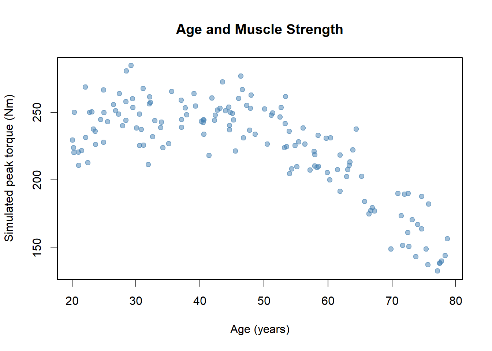
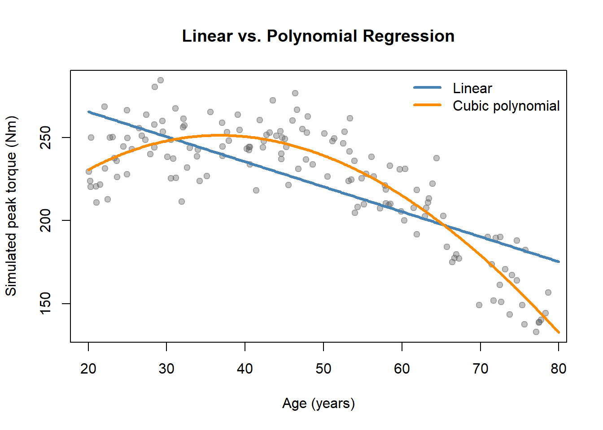
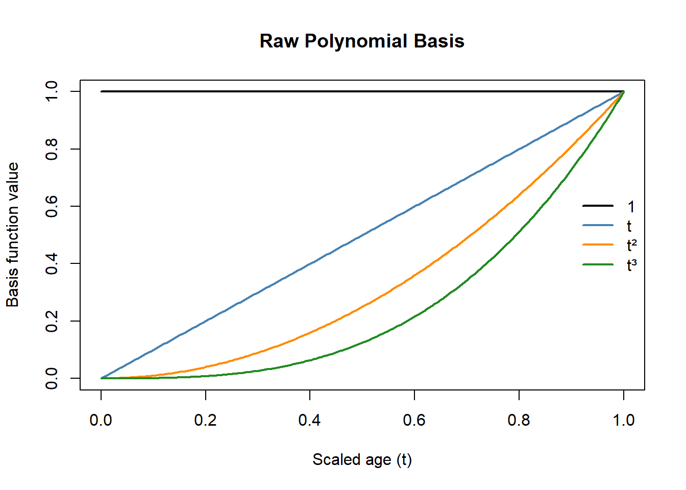
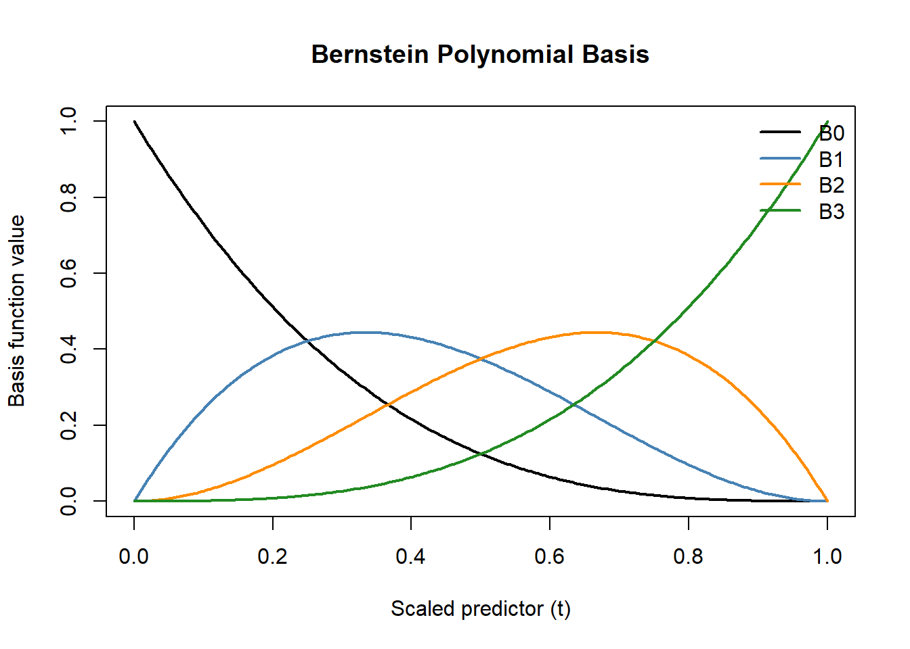
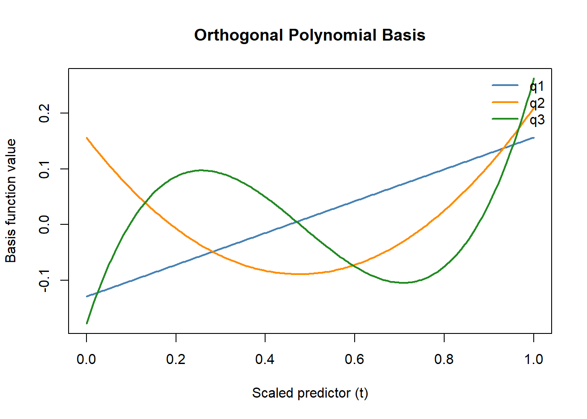
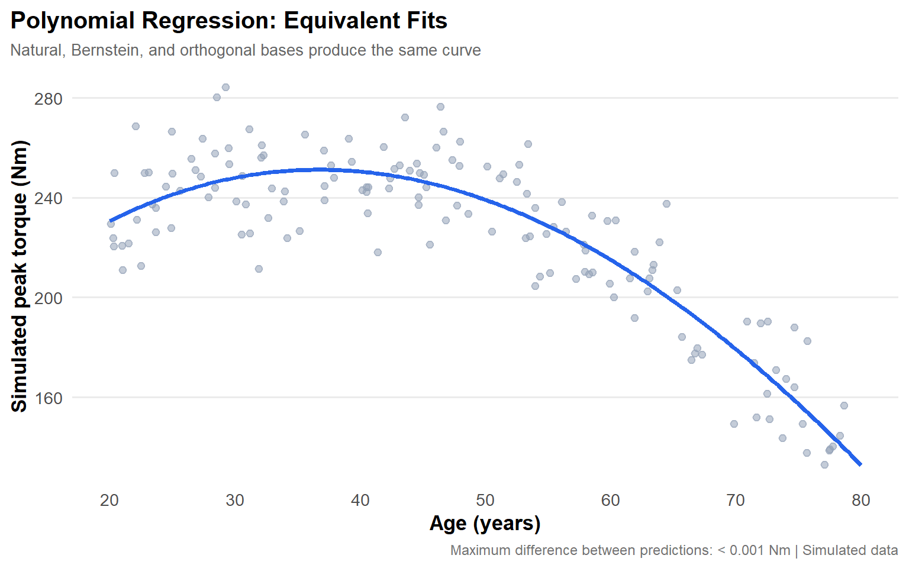

5Polynomial Regression: Natural, Bernstein and Orthogonal Bases
5.1 Introduction
Linear regression is one of the most widely used statistical methods for modeling relationships between variables. In its simplest form, it assumes that the expected outcome changes at a constant rate with respect to a predictor:
\[
E[Y \mid x] = \beta_0 + \beta_1 x
\]
where:
\(Y\) is the outcome variable.
\(x\) is the predictor.
\(\beta_0\) is the intercept.
\(\beta_1\) is the regression coefficient representing the constant slope.
However, many relationships in biological, physical and social sciences are nonlinear. For example, muscle strength may increase during early adulthood, plateau and then decline with advancing age. A straight line may fail to capture such changes in slope.
Polynomial regression addresses this limitation by incorporating powers of the predictor into the regression model.
Adding the squared term allows the fitted relationship to curve rather than follow a straight line.
Importantly, polynomial regression remains a linear model in its coefficients, even though the relationship between the predictor and outcome is nonlinear.
This distinction is important: linearity in regression refers to how the coefficients enter the model, not necessarily to the shape of the relationship between variables.
5.1.1 Example Dataset
Throughout this chapter, we use a simulated dataset describing the relationship between age and isokinetic muscle strength.
The data are generated from a nonlinear function with added random noise. This allows us to compare how different polynomial representations recover the same underlying relationship.
The dataset is entirely simulated and is intended for methodological illustration rather than physiological inference.
Show code
set.seed(2026)# Number of observationsn <-150# Simulate participant agessim <-data.frame(age =runif(n, min =20, max =80))# Generate a nonlinear strength relationshipsim$strength <-250-0.06* (sim$age -35)^2+rnorm(n, mean =0, sd =15)# Scale age to the interval [0, 1]sim$age_scaled <- (sim$age -20) / (80-20)# Inspect the first observationshead(sim)
# Visualize the dataplot( sim$age, sim$strength,pch =19,col =adjustcolor("steelblue", alpha.f =0.5),xlab ="Age (years)",ylab ="Simulated peak torque (Nm)",main ="Age and Muscle Strength")

Simulated relationship between age and muscle strength.
Code explanation
set.seed(2026) ensures that the same random dataset is generated whenever the code is executed.
runif() generates 150 ages uniformly distributed between 20 and 80 years.
The quadratic function generates a nonlinear relationship between age and strength.
rnorm() introduces random normally distributed variation around the underlying relationship.
age_scaled transforms age to a 0–1 scale, which will be useful when constructing Bernstein polynomial basis functions.
plot() displays the observed relationship before fitting any regression model.
5.1.2 Linear Versus Polynomial Regression
To illustrate the motivation for polynomial regression, we compare a conventional linear model with a cubic polynomial model.
Show code
# Fit a conventional linear modellinear_fit <-lm( strength ~ age,data = sim)# Fit a cubic polynomial modelpoly_fit <-lm( strength ~poly(age, 3, raw =TRUE),data = sim)# Generate a sequence of ages for predictionsage_grid <-data.frame(age =seq(20, 80, length.out =300))# Plot observed dataplot( sim$age, sim$strength,pch =19,col =adjustcolor("gray40", alpha.f =0.4),xlab ="Age (years)",ylab ="Simulated peak torque (Nm)",main ="Linear vs. Polynomial Regression")# Add model predictionslines( age_grid$age,predict(linear_fit, newdata = age_grid),col ="steelblue",lwd =3)lines( age_grid$age,predict(poly_fit, newdata = age_grid),col ="darkorange",lwd =3)legend("topright",legend =c("Linear", "Cubic polynomial"),col =c("steelblue", "darkorange"),lwd =3,bty ="n")

Comparison of linear and cubic polynomial regression.
Interpretation
The linear regression model estimates a constant change in predicted muscle strength per one-year increase in age.
The cubic polynomial model allows the slope to vary across age, capturing curvature that a straight-line model cannot represent.
This greater flexibility can improve representation of a nonlinear relationship. However, increasing flexibility does not necessarily improve generalization to new observations. Polynomial degree must therefore be selected carefully.
5.1.3 Applied Research Example: Muscle Strength Assessment
Polynomial fitting has practical applications in exercise physiology. For example, in my first-author publication (Kosti et al., 2026), we applied third-degree polynomial fitting to hand-held dynamometry measurements to estimate force at standardized knee joint angles. This approach facilitated comparisons of muscle strength across the range of motion between hand-held and isokinetic dynamometry.
The study illustrates how polynomial fitting can support the analysis of nonlinear biomechanical relationships in experimental research.
Thus, polynomial regression does not require a fundamentally different estimation procedure. It changes the design matrix by introducing transformed predictors.
5.2.3 Why Different Polynomial Bases?
A polynomial function can be represented using different sets of basis functions.
Three important approaches are:
Natural (raw) polynomials: use powers of the predictor, such as \(1\), \(x\), \(x^2\), and \(x^3\).
Bernstein polynomials: express polynomial functions using a binomial-based basis, typically defined over a bounded interval.
For a fixed polynomial degree, each of these approaches spans the same polynomial function space.
Consequently, when fitted using ordinary least squares without additional constraints or penalties, and with full-rank design matrices, they produce identical fitted values up to numerical precision.
Their differences concern how the polynomial is represented, the interpretation of its coefficients, and its numerical properties.
The following sections examine each representation mathematically and computationally.
5.3 Natural (Raw) Polynomials
Natural, or raw, polynomials model nonlinear relationships using successive powers of a predictor. They provide the most straightforward polynomial basis and serve as a reference for understanding alternative representations.
5.3.1 Mathematical Formulation
For a polynomial of degree \(d\), the raw basis functions are:
The basis consists of four functions: \(1\), \(x\), \(x^2\), and \(x^3\). Their coefficients determine the shape of the fitted relationship.
Unlike simple linear regression, the slope of a polynomial model can change across the predictor’s range. For a cubic polynomial, differentiating with respect to \(x\) gives:
Thus, the rate of change in the expected outcome depends on \(x\), allowing the model to represent curvature.
5.3.2 R Implementation
We use the simulated age and muscle-strength dataset introduced in Section 1.
For visualization and numerical convenience, age is scaled to the interval \([0,1]\):
\[
t=\frac{\text{Age}-20}{60}
\]
Here, \(t\) represents scaled age, where 0 corresponds to 20 years and 1 corresponds to 80 years. This transformation was already applied when creating sim$age_scaled.
First, we visualize the four basis functions of a cubic polynomial.
Show code
# Generate 200 scaled age values between 0 and 1t_grid <-seq(0, 1, length.out =200)# Construct the raw polynomial basis matrixraw_basis <-cbind("1"=rep(1, length(t_grid)),"t"= t_grid,"t²"= t_grid^2,"t³"= t_grid^3)# Visualize individual basis functionsmatplot( t_grid, raw_basis,type ="l", lty =1, lwd =2,col =c("black", "steelblue","darkorange", "forestgreen"),xlab ="Scaled age (t)",ylab ="Basis function value",main ="Raw Polynomial Basis")legend("right",legend =colnames(raw_basis),col =c("black", "steelblue","darkorange", "forestgreen"),lty =1, lwd =2, bty ="n")

Raw polynomial basis functions of degree 3.
The plot illustrates how successive powers of scaled age produce different basis functions. These functions are not separate regression predictions; their weighted combination generates the final fitted curve.
We now fit a cubic polynomial to the simulated data and summarize its estimated coefficients.
Show code
# Fit a cubic polynomial regressionraw_fit <-lm( strength ~poly(age_scaled, 3, raw =TRUE),data = sim)# Extract estimated coefficients and statisticscoef_stats <-summary(raw_fit)$coefficients# Create a formatted coefficient tablecoef_table <-data.frame(Term =c("Intercept","Scaled age (t)","Scaled age squared (t²)","Scaled age cubed (t³)" ),Estimate =round(coef_stats[, "Estimate"], 2),`Std. Error`=round(coef_stats[, "Std. Error"], 2),`p-value`=ifelse( coef_stats[, "Pr(>|t|)"] <0.001,"< 0.001",sprintf("%.3f", coef_stats[, "Pr(>|t|)"])),check.names =FALSE,row.names =NULL)# Display a clean coefficient tableknitr::kable( coef_table,caption ="Cubic Raw Polynomial Regression Coefficients",align =c("l", "r", "r", "r"))
Cubic Raw Polynomial Regression Coefficients
Term
Estimate
Std. Error
p-value
Intercept
230.65
4.29
< 0.001
Scaled age (t)
150.49
40.43
< 0.001
Scaled age squared (t²)
-285.57
99.28
0.005
Scaled age cubed (t³)
37.20
67.61
0.583
5.3.3 Code Explanation and Interpretation
The key components of the implementation are:
poly(age_scaled, 3, raw = TRUE) constructs the three nonconstant basis functions: \(t\), \(t^2\), and \(t^3\), where \(t\) represents scaled age.
raw = TRUE specifies ordinary polynomial powers rather than orthogonal polynomials, which are R’s default.
lm() estimates the coefficients using ordinary least squares and includes an intercept automatically.
summary(raw_fit)$coefficients extracts the estimated coefficients, standard errors, test statistics, and p-values.
data.frame() organizes the relevant statistics into a table, while knitr::kable() formats it for presentation in the HTML document.
matplot() visualizes the individual polynomial basis functions.
The intercept represents predicted muscle strength at age 20 (\(t=0\)).
Because the slope varies with age, the remaining coefficients should be interpreted jointly rather than as independent, constant effects. In particular, \(\hat\beta_1\) represents the slope with respect to scaled age at \(t=0\), while \(\hat\beta_2\) and \(\hat\beta_3\) contribute to changes in that slope.
The fitted curve was already visualized in Section 1. The emphasis here is on how the raw polynomial basis constructs that relationship.
5.4 Bernstein Polynomials
Bernstein polynomials provide an alternative representation of polynomial functions. Rather than using successive powers of a predictor directly, they construct basis functions from the binomial expansion.
This reparameterization preserves the flexibility of ordinary polynomial regression while providing useful numerical and mathematical properties.
5.4.1 Mathematical Formulation
For a polynomial of degree \(d\), the Bernstein basis functions are defined as:
Each Bernstein basis function is multiplied by its corresponding regression coefficient. The four products are then summed to obtain the predicted outcome.
Thus, the basis functions determine the mathematical building blocks, while the estimated coefficients determine how they are combined to form the fitted curve.
Two important properties follow from this construction:
Nonnegativity:\(B_{k,d}(t)\geq 0\) for \(t\in[0,1]\).
Partition of unity: The basis functions sum to one at every value of \(t\).
Consequently, the predicted value is a weighted average of the Bernstein coefficients and lies between their minimum and maximum values within the specified interval.
Although their expressions differ from raw polynomial powers, the Bernstein functions of degree \(d\) span the same polynomial space as \(1,t,\ldots,t^d\).
Thus, for the same degree, both bases can represent exactly the same polynomial relationships.
5.4.2 R Implementation
We use the same simulated dataset and cubic polynomial degree as in Section 3.
First, we construct the Bernstein basis functions directly from their mathematical definition.
Show code
# Define a function to construct the Bernstein basisbern_basis <-function(t, degree =3) { basis <-sapply(0:degree, function(k) {choose(degree, k) * t^k * (1- t)^(degree - k) })colnames(basis) <-paste0("B", 0:degree)return(basis)}# Generate predictor values from 0 to 1t_grid <-seq(0, 1, length.out =200)# Construct cubic Bernstein basis functionsbern_grid <-bern_basis(t_grid, degree =3)# Visualize the basis functionsmatplot( t_grid, bern_grid,type ="l", lty =1, lwd =2,col =c("black", "steelblue","darkorange", "forestgreen"),xlab ="Scaled predictor (t)",ylab ="Basis function value",main ="Bernstein Polynomial Basis")legend("topright",legend =colnames(bern_grid),col =c("black", "steelblue","darkorange", "forestgreen"),lty =1, lwd =2, bty ="n")

Bernstein polynomial basis functions of degree 3.
Unlike raw polynomial powers, the Bernstein basis functions distribute their influence across different regions of the predictor interval.
The first basis function is largest near \(t=0\), the last near \(t=1\), and the two intermediate functions contribute most strongly within the interval.
We can verify that the basis functions sum to one:
Show code
# Verify that the Bernstein basis functions sum to 1check <-all(abs(rowSums(bern_grid) -1) <1e-10)cat("All Bernstein basis functions sum to 1:", check)
All Bernstein basis functions sum to 1: TRUE
The result confirms that the Bernstein basis functions sum to one across the predictor interval, up to numerical precision.
5.4.2.1 Fitting the Bernstein Regression Model
We now construct the Bernstein basis for the observed ages and use it as the design matrix in a regression.
Show code
# Construct the basis for the observed predictorbern_train <-as.data.frame(bern_basis(sim$age_scaled, degree =3))# Combine basis functions with the outcomebern_data <-data.frame(strength = sim$strength, bern_train)# Fit the Bernstein polynomial modelbern_fit <-lm( strength ~0+ B0 + B1 + B2 + B3,data = bern_data)# Extract coefficient statisticscoef_stats_bern <-summary(bern_fit)$coefficients# Create a formatted coefficient tablebern_coef_table <-data.frame(Term =rownames(coef_stats_bern),Estimate =round(coef_stats_bern[, "Estimate"], 2),`Std. Error`=round(coef_stats_bern[, "Std. Error"], 2),`p-value`=ifelse( coef_stats_bern[, "Pr(>|t|)"] <0.001,"< 0.001",sprintf("%.3f", coef_stats_bern[, "Pr(>|t|)"])),check.names =FALSE,row.names =NULL)# Display the formatted tableknitr::kable( bern_coef_table,caption ="Cubic Bernstein Polynomial Regression Coefficients",align =c("l", "r", "r", "r"))
The model includes all four Bernstein basis functions.
The formula contains 0 + to remove the usual additional intercept because the Bernstein functions already sum to one. Including an intercept alongside all four basis functions would create an exact linear dependency in the design matrix.
5.4.2.2 Comparing Bernstein and Raw Polynomial Predictions
Because both models use degree-3 polynomial bases, they should produce equivalent fitted values.
Show code
# Calculate maximum absolute differencemax_difference <-max(abs(fitted(raw_fit) -fitted(bern_fit)))# Display a reader-friendly resultcat("Maximum difference between predictions:",ifelse(max_difference <0.001,"< 0.001 Nm",paste0(round(max_difference, 3), " Nm")))
Maximum difference between predictions: < 0.001 Nm
The maximum absolute difference in fitted values is approximately zero, confirming that the raw and Bernstein polynomial models produce equivalent predictions up to numerical precision.
Although their estimated coefficients differ, both models represent the same cubic polynomial function space. This illustrates that changing the polynomial basis alters the parameterization rather than the fitted relationship.
5.4.3 Code Explanation and Interpretation
The implementation involves three key steps.
1. Constructing the Bernstein basis
The custom function bern_basis() implements the mathematical definition directly.
choose(degree, k) calculates the binomial coefficient.
t^k calculates \(t^k\), the scaled predictor raised to the power \(k\).
(1-t)^(degree-k) calculates \((1-t)^{d-k}\), the complementary term of the Bernstein formula.
sapply() evaluates the expression for every value of \(k\), creating one column per basis function.
This approach makes the mathematical construction explicit rather than relying on a specialized package.
2. Estimating the model
The lm() function fits the regression using the four Bernstein basis columns.
The expression 0 + B0 + B1 + B2 + B3 includes the complete Bernstein basis without introducing a redundant intercept.
The resulting coefficients describe the contribution of each basis function to the predicted muscle-strength curve.
3. Verifying equivalence
The fitted() function extracts the predicted values from both polynomial models.
Comparing these values demonstrates that the raw and Bernstein representations produce the same fitted relationship when estimated using ordinary least squares with the same degree and full-rank design matrices.
5.4.3.1 Interpretation of Bernstein Coefficients
Unlike raw polynomial coefficients, Bernstein coefficients describe the combination of basis functions that determines the curve.
For a cubic model:
\(\alpha_0\) equals the predicted outcome at \(t=0\).
\(\alpha_3\) equals the predicted outcome at \(t=1\).
\(\alpha_1\) and \(\alpha_2\) influence the curve’s behavior between the endpoints.
In our example, the first and last coefficients correspond to predicted strength at ages 20 and 80 years.
The intermediate coefficients are not necessarily predicted values at specific ages. Rather, they help determine the shape of the curve.
Because the basis functions are nonnegative and sum to one, restrictions on the coefficients can also be used to impose useful properties on the fitted relationship, such as monotonicity.
Overall, Bernstein polynomials provide a mathematically structured alternative to raw powers while preserving the same polynomial function space.
5.5 Orthogonal Polynomials
Orthogonal polynomials provide another representation of polynomial regression. Unlike raw polynomial powers, which may be strongly correlated, orthogonal polynomial basis functions are constructed to be mutually orthogonal across the observed predictor values.
This transformation improves numerical stability while preserving the polynomial function space.
5.5.1 Mathematical Formulation
Two vectors are orthogonal when their dot product equals zero.
For two vectors \(\mathbf{a}\) and \(\mathbf{b}\), the dot product is defined as:
In polynomial regression, each basis function produces a column of the design matrix when evaluated at the observed predictor values.
For example, raw quadratic regression uses the basis:
\[
1,\quad x,\quad x^2
\]
These columns are generally not orthogonal, because their pairwise dot products may be nonzero.
Orthogonal polynomials construct new basis functions \(q_1(x),q_2(x),\ldots,q_d(x)\) whose corresponding columns in the design matrix are mutually orthogonal.
Mathematically, this means:
\[
\boxed{
\sum_{i=1}^{n}q_j(x_i)q_k(x_i)=0,
\qquad j\neq k
}
\]
where:
\(n\) is the number of observations.
\(x_i\) is the predictor value for observation \(i\).
\(q_j(x_i)\) and \(q_k(x_i)\) are the values of two different polynomial basis functions evaluated at that observation.
\(\sum\) indicates that the products are added across all observations.
\(j\neq k\) means we are comparing two different basis functions.
In simpler terms, the dot product between any two different basis-function columns equals zero.
This does not mean the individual products must equal zero. Rather, their sum across all training observations must equal zero.
The following numerical example demonstrates how this property can be achieved.
The first and third columns are not orthogonal because:
\[
(1)(1)+(1)(0)+(1)(1)=2
\]
To construct an orthogonal quadratic basis function, we need to modify \(x^2\) so that its dot product with the constant column \((1,1,1)\) equals zero.
Suppose we subtract an unknown constant \(c\) from \(x^2\):
\[
q_2(x)=x^2-c
\]
We determine \(c\) by requiring orthogonality to the constant column:
\[
(1)(1-c)+(1)(0-c)+(1)(1-c)=0
\]
Simplifying:
\[
2-3c=0
\quad\Rightarrow\quad
c=\frac{2}{3}
\]
Notice that \(2/3\) is also the mean of the squared predictor values:
\[
\frac{1+0+1}{3}=\frac{2}{3}
\]
Therefore, our new quadratic basis function is:
\[
q_2(x)=x^2-\frac{2}{3}
\]
Subtracting this constant makes the quadratic column orthogonal to the intercept. Because our predictor values \((-1,0,1)\) are symmetric around zero, the resulting column is also orthogonal to the linear term \(x\).
For a general dataset, additional adjustments may be required to achieve orthogonality with both terms.
Its dot product with the linear column is also zero:
\[
(-1)(1/3)+(0)(-2/3)+(1)(1/3)=0
\]
Therefore, the three functions
\[
1,\quad x,\quad x^2-\frac{2}{3}
\]
form an orthogonal basis for this particular set of observations.
The adjustments required to construct orthogonal polynomials depend on the observed predictor values.
A common mathematical procedure for constructing orthogonal bases is Gram–Schmidt orthogonalization, which progressively removes the components of each vector that overlap with previously constructed vectors. This produces mutually orthogonal basis functions while preserving the same polynomial function space.
In R, poly() performs the orthogonal polynomial construction automatically, so these adjustments do not need to be calculated manually.
5.5.1.2 Regression Using Orthogonal Polynomials
For a polynomial of degree \(d\), the model can be written as:
\(q_k(x)\) represents an orthogonal polynomial basis function.
\(\alpha_k\) is its corresponding regression coefficient.
\(d\) is the polynomial degree.
The orthogonal basis spans the same polynomial function space as the raw basis of equal degree.
Therefore, changing from raw to orthogonal polynomials does not change the set of relationships that the model can represent.
Importantly, orthogonality is defined with respect to the predictor values used to construct the basis. The same columns are not necessarily orthogonal when evaluated on a different dataset.
5.5.2 R Implementation
We use the same simulated age and muscle-strength dataset as in the previous sections.
R constructs orthogonal polynomial bases automatically using poly() when raw = TRUE is not specified.
5.5.2.1 Constructing and Visualizing the Basis
Show code
# Construct orthogonal polynomial basisorth_basis <-poly(sim$age_scaled, degree =3)# Generate predictor values for visualizationt_grid <-seq(0, 1, length.out =200)# Evaluate the basis using the training transformationorth_grid <-predict( orth_basis,newdata = t_grid)# Visualize the three nonconstant basis functionsmatplot( t_grid, orth_grid,type ="l", lty =1, lwd =2,col =c("steelblue", "darkorange","forestgreen"),xlab ="Scaled predictor (t)",ylab ="Basis function value",main ="Orthogonal Polynomial Basis")legend("topright",legend =c("q1", "q2", "q3"),col =c("steelblue", "darkorange","forestgreen"),lty =1, lwd =2, bty ="n")

Orthogonal polynomial basis functions of degree 3.
The orthogonal basis functions have different shapes and scales from the raw and Bernstein bases.
Unlike the Bernstein basis, orthogonal functions can take both positive and negative values.
Their defining characteristic is not their visual appearance but the orthogonality of their evaluated columns across the training observations.
5.5.2.2 Verifying Orthogonality
We can verify the defining mathematical property using matrix multiplication.
The model includes three orthogonal polynomial predictors and an intercept.
5.5.2.4 Comparing Orthogonal and Raw Polynomials
We can verify whether the two approaches produce equivalent fitted values.
Show code
# Calculate maximum absolute difference between# raw and orthogonal polynomial predictionsmax_difference_orth <-max(abs(fitted(raw_fit) -fitted(orth_fit)))# Display a reader-friendly resultcat("Maximum difference between predictions:",ifelse( max_difference_orth <0.001,"< 0.001 Nm",paste0(round(max_difference_orth, 3), " Nm") ))
Maximum difference between predictions: < 0.001 Nm
The maximum absolute difference in fitted values is approximately zero, confirming that raw and orthogonal polynomial regression produce equivalent predictions up to numerical precision.
Although their coefficients differ, both approaches represent the same cubic polynomial function space. Orthogonalization changes the mathematical representation and improves numerical conditioning without changing the fitted relationship.
5.5.3 Code Explanation and Interpretation
1. Constructing the orthogonal basis
The command poly(sim$age_scaled, degree = 3) generates three nonconstant orthogonal polynomial columns.
Unlike raw polynomials, the resulting columns are constructed so that their pairwise dot products equal zero, within numerical precision.
The predict() function evaluates the same basis transformation at new predictor values, preserving the scaling and normalization established from the training data.
2. Verifying orthogonality
The command crossprod(orth_basis) calculates the dot products between every pair of basis columns.
Because the columns are orthonormal, the resulting matrix is approximately an identity matrix, with ones on the diagonal and zeros elsewhere.
The knitr::kable() function presents these results in a formatted table, making the orthogonality property easier to visualize.
3. Estimating the model
The lm() function estimates the regression coefficients using ordinary least squares.
The formula poly(age_scaled, 3) uses orthogonal polynomials by default, whereas poly(age_scaled, 3, raw = TRUE) uses ordinary polynomial powers.
Both construct cubic polynomial models.
The command summary(orth_fit)$coefficients extracts the coefficient estimates and their associated statistics, which are organized using data.frame() and displayed using knitr::kable().
4. Comparing fitted values
The fitted() function extracts the predicted values for each observation.
The expression max(abs(...)) calculates the maximum absolute difference between the raw and orthogonal polynomial predictions.
A difference smaller than 0.001 Nm confirms that the two models produce practically identical fitted values.
5.5.3.1 Interpretation
Orthogonal polynomial coefficients represent contributions associated with the orthogonal basis functions rather than directly corresponding to the original linear, quadratic, and cubic powers.
Consequently, individual coefficients are generally less intuitive to interpret than those from a raw polynomial model.
However, the fitted relationship and its predictions remain interpretable in the original predictor and outcome units.
Orthogonality also reduces numerical dependence between polynomial terms, improving the conditioning of the regression problem.
It does not, by itself, prevent overfitting or improve predictive accuracy. Polynomial degree, sample size, and model validation remain important considerations.
Thus, orthogonal polynomials are primarily useful as an alternative numerical representation of polynomial regression, particularly when higher-degree polynomial terms would otherwise create substantial numerical instability.
5.6 Comparison of Polynomial Bases
Natural, Bernstein, and orthogonal polynomials provide different mathematical representations of the same polynomial function space.
For a fixed polynomial degree, each basis can represent the same set of polynomial relationships. However, the basis functions differ in their mathematical properties, coefficient interpretation, and numerical behavior.
5.6.1 Comparison of the Three Approaches
Property
Natural (Raw)
Bernstein
Orthogonal
Basis construction
Successive powers: \(1,x,x^2,\ldots\)
Binomial basis functions
Orthogonalized polynomial functions
Main advantage
Simple mathematical formulation and implementation
Nonnegative basis functions that sum to one on \([0,1]\)
Reduces numerical dependence between polynomial terms
Main limitation
Higher powers may produce multicollinearity and numerical instability
Requires a specified interval; coefficients are less familiar
Coefficients are less directly interpretable
Coefficient interpretation
Coefficients of individual polynomial powers
Weights associated with Bernstein basis functions
Coefficients associated with orthogonal polynomial components
When useful
Low-degree models and straightforward polynomial representation
Shape-constrained modeling and polynomial approximation on bounded intervals
Higher-degree polynomial regression when numerical conditioning is a concern
Note on statistical inference: Although the three bases produce identical fitted values, their individual coefficients represent different mathematical quantities. Consequently, coefficient-level p-values test different hypotheses and should not be directly compared across bases as measures of model performance. Model equivalence is demonstrated through their fitted predictions.
The choice of basis therefore depends primarily on the desired mathematical properties and numerical behavior, rather than on differences in the polynomial functions that can be represented.
5.6.2 Comparing Fitted Relationships
We can demonstrate the equivalence of the three approaches by visualizing their predictions using the same simulated dataset and polynomial degree.
Show code
library(ggplot2)# Create a common prediction gridpred_grid <-data.frame(age_scaled =seq(0, 1, length.out =300))# Convert scaled age back to yearspred_grid$age <-20+60* pred_grid$age_scaled# Generate predictions from all three modelspred_grid$raw <-predict( raw_fit, newdata = pred_grid)pred_grid$bernstein <-predict( bern_fit,newdata =as.data.frame(bern_basis(pred_grid$age_scaled, degree =3) ))pred_grid$orthogonal <-predict( orth_fit, newdata = pred_grid)# Calculate the maximum difference across modelsmax_diff <-max(abs(pred_grid$raw - pred_grid$bernstein),abs(pred_grid$raw - pred_grid$orthogonal),abs(pred_grid$bernstein - pred_grid$orthogonal))# Create a publication-style figureggplot(sim, aes(x = age, y = strength)) +geom_point(color ="#94A3B8",alpha =0.55,size =1.9 ) +geom_line(data = pred_grid,aes(x = age, y = raw),inherit.aes =FALSE,color ="#2563EB",linewidth =1.3 ) +scale_x_continuous(breaks =seq(20, 80, 10)) +labs(title ="Polynomial Regression: Equivalent Fits",subtitle ="Natural, Bernstein, and orthogonal bases produce the same curve",x ="Age (years)",y ="Simulated peak torque (Nm)",caption =paste0("Maximum difference between predictions: ",ifelse(max_diff <0.001, "< 0.001",sprintf("%.3f", max_diff))," Nm | Simulated data" ) ) +theme_minimal(base_size =13) +theme(plot.title =element_text(face ="bold", size =15),plot.subtitle =element_text(size =10, color ="gray40"),plot.caption =element_text(size =9, color ="gray45"),axis.title =element_text(face ="bold"),panel.grid.minor =element_blank(),panel.grid.major.x =element_blank(),plot.title.position ="plot" )

Comparison of cubic polynomial regression using natural, Bernstein, and orthogonal bases. All three produce equivalent fitted curves.
Code explanation
The three polynomial models are evaluated on an identical sequence of scaled age values, ensuring a direct comparison.
predict() generates fitted muscle-strength values from each model.
bern_basis() constructs the Bernstein basis functions for the prediction grid.
geom_point() displays the observed simulated data.
geom_line() displays the common fitted relationship using predictions from the raw polynomial model.
max(abs(...)) calculates the maximum absolute difference between predictions across all three models.
ggplot2 provides a consistent, publication-style visualization.
Because all three models produce equivalent fitted values, only one curve is displayed to avoid redundant overlapping lines.
The maximum prediction difference is reported in the figure caption, providing numerical confirmation of their equivalence.
This demonstrates that changing the polynomial basis alters the coefficient representation but not the fitted relationship, when the polynomial degree and estimation conditions are identical.
5.7 Practical Considerations
Although polynomial regression is flexible, several considerations influence its use in statistical modeling.
5.7.1 Selecting Polynomial Degree
The degree of a polynomial determines its complexity.
A degree-1 polynomial represents a straight line, whereas higher degrees allow increasingly flexible relationships.
However, increasing the polynomial degree also increases the number of estimated coefficients and may introduce unnecessary complexity.
A polynomial with insufficient flexibility may underfit the relationship, whereas an excessively flexible polynomial may overfit random variation in the training data.
Polynomial degree should therefore be guided by scientific knowledge, diagnostic assessment, and predictive validation, such as cross-validation, when prediction is the objective.
5.7.2 Numerical Stability
Higher-order raw polynomial terms can become strongly correlated, especially when the predictor spans a wide numerical range.
This can produce an ill-conditioned design matrix and reduce the numerical reliability of coefficient estimation.
Scaling predictors and using alternative bases, particularly orthogonal polynomials, can help address numerical conditioning.
However, improving numerical conditioning does not necessarily improve out-of-sample predictive performance.
5.7.3 Extrapolation
Polynomial models can behave unpredictably outside the observed predictor range.
Even a polynomial that fits the training data well may produce unrealistic predictions when extrapolated beyond the values used for estimation.
For example, a polynomial fitted to muscle strength between ages 20 and 80 should not automatically be assumed to describe strength at ages outside that range.
Predictions should therefore be interpreted primarily within the domain supported by the observed data.
5.7.4 Interpretation and Scientific Relevance
Polynomial regression describes the shape of a statistical association but does not, by itself, establish a causal relationship.
Furthermore, individual polynomial coefficients may be difficult to interpret, especially when several powers of the same predictor are included.
Consequently, interpretation should emphasize the overall fitted relationship, changes in predicted outcomes across meaningful predictor values, and uncertainty in the estimates.
5.8 Key Takeaways
Polynomial regression extends the flexibility of linear regression through basis expansion, allowing nonlinear relationships to be modeled while retaining linearity in the regression coefficients.
Three important polynomial representations were examined:
Natural (raw) polynomials use successive powers of the predictor and provide a straightforward mathematical representation of nonlinear relationships.
Bernstein polynomials use a binomial-based basis with nonnegative functions that sum to one, making them particularly useful for modeling on bounded intervals and implementing shape constraints.
Orthogonal polynomials construct mutually orthogonal basis columns, improving numerical conditioning and reducing numerical dependence between polynomial terms.
For a fixed polynomial degree, all three bases span the same polynomial space and produce equivalent fitted values under ordinary least squares, provided the design matrices have full column rank and no additional constraints or penalties are imposed.
The main distinction is therefore not the range of curves each basis can represent, but how those curves are constructed, estimated, and interpreted.
Ultimately, the choice of polynomial degree determines model flexibility, while the choice of polynomial basis determines the mathematical and numerical representation of that flexibility.